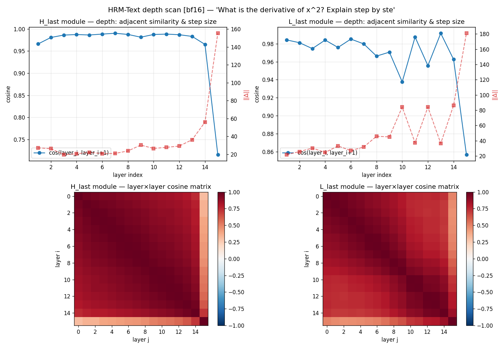
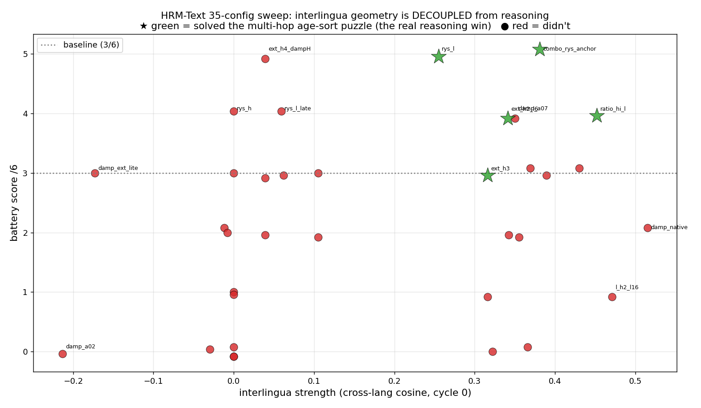

HRM:
a false dawn.
A Hierarchical Reasoning Model — a recurrent architecture whose whole thesis is reasoning-depth through loops, not parameters. The dissection produced a clean mechanistic picture, one gorgeous finding ("duplicate the renderer module and multi-hop reasoning improves"), and then — when I ran the rigorous follow-up the finding deserved — the headline collapsed. Sampling killed it. What survived is more useful than what died.
= 8 passes / token
weight-shared
across 5 waves
greedy, n=1
sampled, verified
HRM-Text-1B is a language-scale adaptation of Sapient's Hierarchical Reasoning Model — two recurrent transformer stacks, a low-level L module and a high-level H module, iterated together. The original was ~27M parameters and reasoned on ARC and Sudoku purely by recurrent computation at fixed parameter count. Run here through Aryagm's HRM-mlx Apple-Silicon port — which is not mlx_lm-compatible; the recurrence needs bespoke per-pass KV caches.
The probe arsenal: a cross-language interlingua scan (geometry), a per-cycle logit lens (mechanism), a coherence detector (degeneracy floor), and a small reasoning battery (capability). Triangulating them is the whole method — and is also exactly what went wrong.
§1The slow/fast split is real, and legible
The forward loop, almost literally: the fast L module relaxes many times toward a target held fixed by the slow H state; then H takes a single step, moving the target; repeat. It is nested fixed-point iteration — mutual refinement of one evolving state, not a one-way pipeline.
A per-cycle logit lens — decoding each module's state through the output head — makes the division of labour visible in plain token space. H (meaning) decodes to content: the problem's actual numbers, reasoning words like "Since," "We," "By." L (surface) decodes to subword fragments that aren't clean output tokens. The roles aren't a training story you have to take on faith; they're right there in the decode.

§2An interlingua — with a warning label
Using a cross-language centered-cosine probe (parallel EN/ZH/FR sentences), the model develops a partial language-decoupled "interlingua" — but only for structured content, and only in the H module.
Math, English↔Chinese: cosine jumps to +0.32 the instant the state enters the H (slow) module, cycle 0, and recurs across cycles. Prose (fact, poem) EN↔ZH never crosses (~0). Only structured, numeric content becomes language-decoupled — and it happens in the meaning module, exactly where the lens says meaning lives.
This is a real representational property, and it is seductive. Remember it — in §5 it becomes the trap. A metric this clean, this theoretically-satisfying, is precisely the kind of thing that will later seem to "corroborate" a behavioral story it has nothing to do with.
§3The loop-scaling negative (and a self-correction)
HRM's whole premise is buying reasoning with more loops, so I pushed H_cycles from 2 to 8. It does not help: the math interlingua peaks at the trained cycles and decays to noise by H2+, and the H-state does not converge to a fixed point — it oscillates.
I first logged this as "low-rank collapse." An effective-rank probe falsified my own claim — the participation ratio rises across cycles (10→22), it doesn't fall. The real mechanism, from the lens: over iteration, the meaning channel converges onto end-of-sequence and formatting tokens (<|box_end|>, \n). The model reads excess compute as "you're done — terminate." Content evaporates into termination, at full rank. The checkpoint is saturated at its trained depth; you cannot buy reasoning with free test-time loops. (First lesson that a probe can mislead — a rank probe corrected a wrong reading of a cosine probe. It would not be the last.)
§4The exciting finding — a sweep, and a "champion"
A unified harness, ~35 configs across five waves: layer duplication, per-cycle L-schedules, residual damping, H/L ratios. Readout per config: geometry + interlingua + logit-lens + a 6-item reasoning battery — scored greedily, n=1. A clean story emerged.
| config | battery | solved the multi-hop age-sort? |
|---|---|---|
| baseline | 3 / 6 | ✗ |
| rys_l (duplicate early L layers) | 5 / 6 | ✓ — best of all configs |
| combo_rys_anchor | 5 / 6 | ✓ |
| ratio_hi_l (more L cycles) | 4 / 6 | ✓ |
| ext_h2_l6 (2× L) | 4 / 6 | ✓ |
| every extended-H config | 0–1 / 6 | ✗ |
The pattern was gorgeous and theoretically motivated: more settling in the fast/renderer module helped reasoning; more drift-inducing H hurt. A narrow sweet spot, early-L duplication. And the interlingua geometry seemed to corroborate it. It even survived a first robustness pass — the supposed null control (duplicating L) was the single best config. (In hindsight, that the control won should have been the tell.)

§5The turn: verification deflates it
The whole thing rested on greedy, n=1 scoring. The rigorous follow-up — sampling at temperature 0.7, N=3 per item — broke it immediately.
| age-sort, sampled (N=3) | score | vs greedy |
|---|---|---|
| baseline | 2 / 3 | solves it ~70% on its own |
| rys_l (the "champion") | 0 / 3 | worse than baseline ←!! |
| combo_rys_anchor | 1 / 3 | within noise |
| ratio_hi_l | 2 / 3 | within noise |
| ext_h2_l6 | 2 / 3 | within noise |
The champion scored 0/3 — worse than baseline. No config beat baseline; everything non-extended clustered within N=3 noise. The base model is simply non-deterministic and solves these puzzles ~70% of the time on its own — the greedy sweep had been measuring which single draw got lucky, not capability.
And the interlingua metric that "corroborated" the story? Decoupled. Across all configs the highest-interlingua runs were among the worst behaviorally; a config with near-zero interlingua reasoned fine. The pretty geometry measures a representational property, not capability — the §2 warning label, cashed in. (Second, decisive lesson that probes mislead — and this one had fooled me for a full overnight.)
§6What actually held — and the mechanism
Reading the real generations and the per-cycle lens — not just the scores — recovered a satisfying result: the modules' roles, confirmed by how they fail.
The modules behave exactly as their roles predict — the surgery perturbs the surface (L) or the state stability (H), and neither reliably improves reasoning. The robust conclusions: you can reliably make this model worse (extend H → garbage); you cannot reliably make it better by inference-time surgery; one fencepost trap (clock_strike) was solved by nothing, ever — a hard capability ceiling. The reasoning capability is near-fixed and saturated; the real lever is retraining, not surgery.
§7What each instrument is actually good for
| probe | measures | verdict |
|---|---|---|
| interlingua (cosine) | representational geometry | decoupled from capability — not a capability proxy |
| coherence (distinct-trigram + boxed-rate) | degeneracy / non-commitment | a crater floor detector (Pearson +0.44); can't separate good from better |
| logit lens (per-cycle) | mechanism | the MVP — pinpointed drift vs fragmentation; twice corrected wrong readings |
| behavioral battery | reasoning | the only capability signal — but worthless at greedy n=1; needs sampling + headroom + N≥~8 |
§8The methodology lesson
§9Caveats & reproduction
- n is small even after the follow-up (N=3 on verification); the deflation is clear but residual effects (a possible weak more-L → fencepost lift) are unresolved and need N≥8 on harder items.
- The battery is a vibes-grade yardstick, fit for within-model deltas, not cross-model claims; the multi-hop items saturate baseline (limited headroom).
- Scorers are imperfect — one item's answer collides with its prompt; exact-name matching penalises correct-order/wrong-surface. Full generations are dumped so any claim can be re-graded.
- The original greedy "champion" generations were never saved — superseded by the sampled re-runs. Fitting: the thing that started the excitement was a draw that can't be reproduced.
- This is an under-trained base checkpoint without ACT. The loop-scaling story may well be true on a properly-trained successor. None of this indicts the architecture — only this checkpoint, probed this way.
Model: Aryagm/HRM-Text-1B-MLX (bf16 probing / 4bit serving), via HRM-mlx. Always --static-cache; bf16, never fp16. Scripts: extract_states.py · interlingua_scan.py · logit_lens.py · experiments.py (sampling) · regrade.py (strict boxed) · probe_coherence.py. Full-generation JSONs in figs/. Sibling specimens: Granite · Gemma 4.